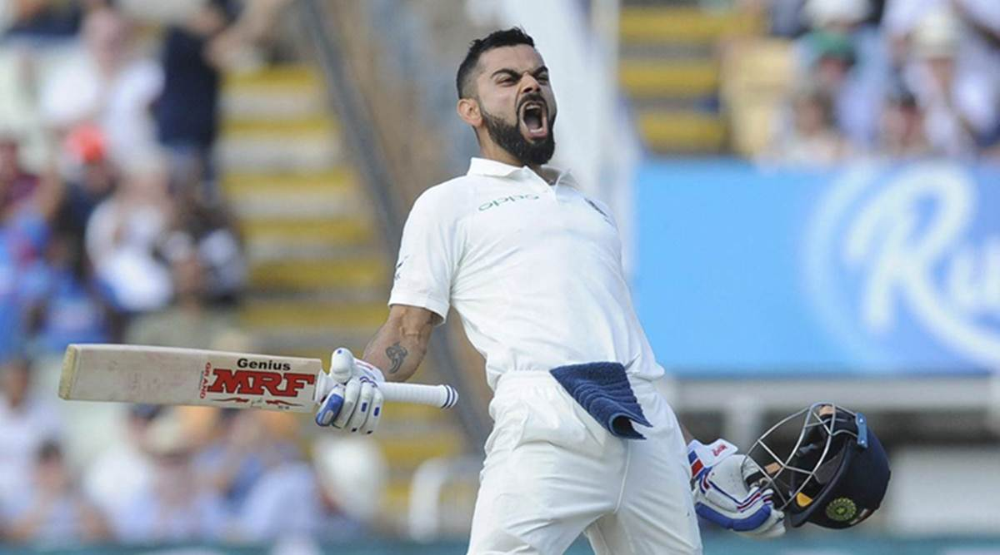
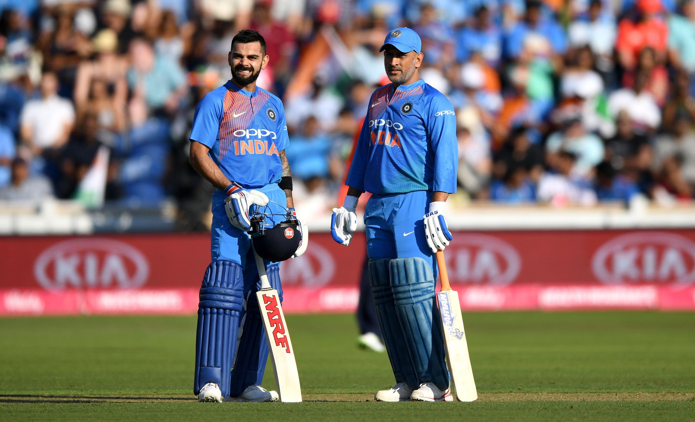
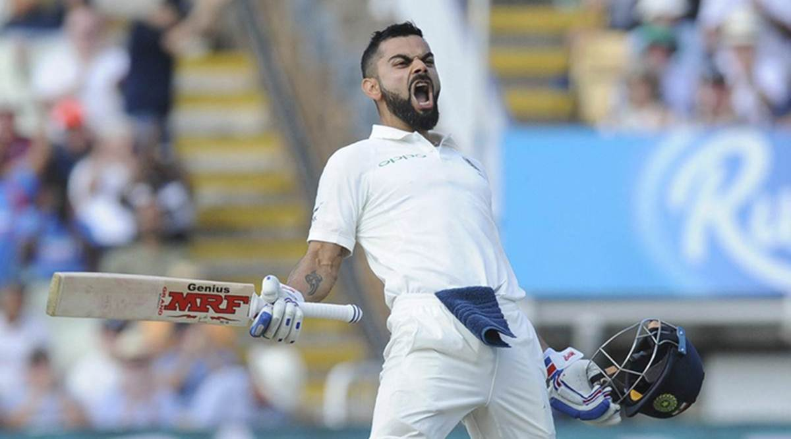
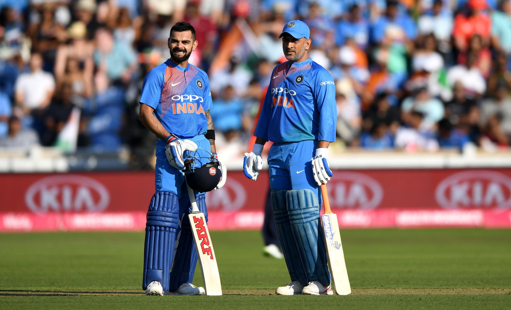

About Virat kohli
Virat Kohli, the modern-day cricketing maestro, has etched his name in the annals of the sport as a true legend. As the former captain of the Indian cricket team, Kohli's leadership prowess was as formidable as his batting skills. His aggressive and fearless approach to the game, both as a captain and a batsman, has set new standards for excellence. Kohli's insatiable hunger for runs and his ability to chase down targets under pressure have become the stuff of cricketing folklore. With a plethora of records to his name, including being one of the fastest to reach 8,000, 9,000, and 10,000 runs in One Day Internationals, Kohli has redefined consistency in the modern era. Beyond the statistics, his passion, commitment, and unwavering determination on the field have made him an iconic figure in the cricketing world. As a leader, batsman, and ambassador of the game, Virat Kohli's legacy is destined to endure, marking him as a true legend in the history of cricket

 


